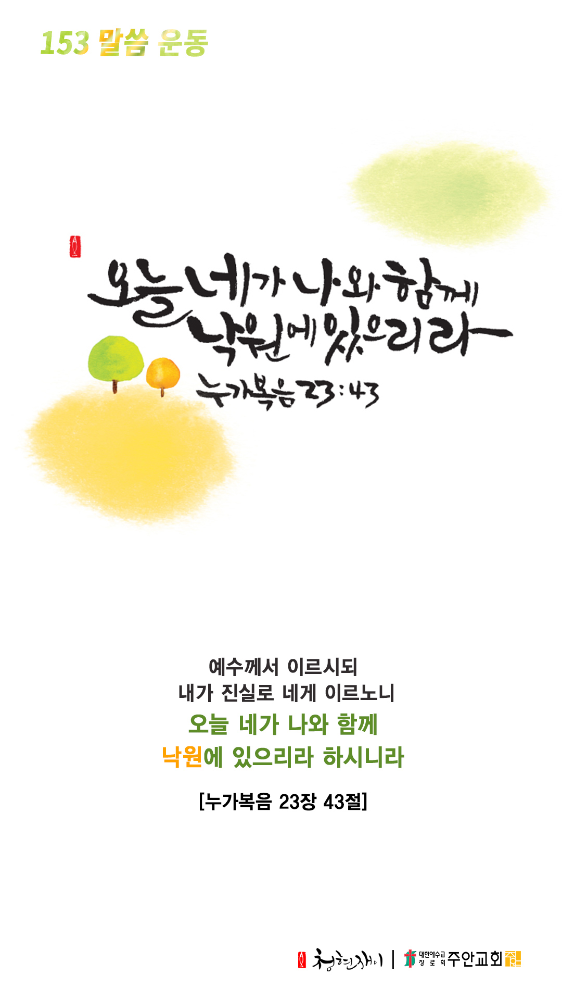

온라인 기도실 안내
2020년 10월11일(일)~10월17일(토)
- 온라인 기도실은 온 회중이 함께 하나님께 나아가는 자리입니다
- 30분 정도 여유를 갖고 하시길 바랍니다
- 말씀과 묵상, 찬양과 기도로 함께 합니다
- 배경 음악이 나올 수 있습니다 볼륨을 조절해주세요
준비가 되셨으면 아래의 버튼을 눌러주세요
찬양, 주의 성실을 찬양하리이다
(시71:22)
- 먼저 찬양의 가사를 천천히 읽어 봅시다
주의 임재 앞에 잠잠해 주 여기 계시네
와서 모두 굽혀 경배해 신령과 진리로
순결하신 주님 거룩한 존전에
주의 임재 앞에 잠잠해 주 여기 계시네
주의 능력 앞에 잠잠해 주 역사 하시네
죄 사하고 치유하시는 놀라운 주 은혜
주 믿는 자에게 능치 못함 없네
주의 능력 앞에 잠잠해 주 역사 하시네
찬양, 주의 성실을 찬양하리이다
(시71:22)
주의 임재 앞에 잠잠해 - 뉴크리에이션워십
위의 찬양이 끝나면 말씀읽기를 눌러주시면 됩니다
말씀하옵소서, 주의 종이 듣겠나이다
(삼상3:10)
오늘의 말씀입니다
음악 소리가 크면 조절하시기 바랍니다

마음의 묵상
(눅23:43)
“예수께서 이르시되 내가 진실로 네게 이르노니 오늘 네가 나와 함께 낙원에 있으리라 하시니라”
1. 죄인이 주님께 인정받을 때는 언제인가요?
2. 지금 주님과 함께 계시나요?
3. 주님의 약속을 신뢰하시나요?
주님과 함께 있겠습니다
회개, 삶 전체의 방향을 바꾸는 결정
원함을 나열하는 것이 기도가 아닙니다
회개함 없이 주님 앞에 설 수 없습니다
“그러므로 회개에 합당한 열매를 맺고”
[마태복음 3장8절]
3분 정도 회개하며 주님 앞에 나아갑니다
내 중심이 주를 간절히 구하오리니
- 다음의 기도문을 소리내어 읽습니다
토마스 아켐피스의 기도
오 주여 당신은 무엇이 최선인지 아십니다 모든 일을 당신의 뜻대로 이루소서
당신이 선택한 것을 당신이 선택한 양만큼 당신이 선택한 순간에 주옵소서
당신이 원하는 곳에 나를 두시고 적당하다고 생각하시는 대로 나를 다루소서
나는 당신의 손 안에 있습니다
당신의 뜻대로 인도하소서
나는 무슨 일이든 준비된 당신의 종입니다
나 자신이 아니라 당신만을 위해서 살기 원합니다
이렇게 완벽하게 살 수 있기를 얼마나 바라는지요
하나님 나라
1. 하나님의 나라가 속히 이 땅에 임하게 하소서
하나님 아버지, 오늘도 코로나로 인하여 고통받고 있는 수
많은 사람들이 우리의 유일한 도움이 되시는 하나님께 나오게
하시고, 온 인류의 심령 속에 하나님의 나라가 임하게 하소서.
간절한 마음으로 3분 정도 기도합시다
남과 북
2. 남북한이 속히 복음으로 통일되게 하소서
하나님 아버지, 북한에 속히 복음의 문이 열리게 하시고,
남북한이 화평케 하는 복음 안에서 대화하게 하시어,
속히 한반도에 참 자유와 통일의 열매가 맺히게 하소서.
간절한 마음으로 3분 정도 기도합시다
대한민국
3. 우리나라가 하나님을 경외하는 나라가 되게 하소서
하나님 아버지, 우리 민족이 코로나 사태를 겪으면서
진정한 치유와 회복이 오직 하나님께 있음을 깨닫게 하시고,
오직 하나님만 바라고 섬기는 제사장 민족이 되게 하소서.
간절한 마음으로 3분 정도 기도합시다
한국교회
4. 한국교회가 성령으로 새롭게 부흥되게 하소서
하나님 아버지, 한국교회가 성령님의 도우심으로 코로나의
위기를 통해서 그 동안 잘못된 맘모니즘과 기복신앙에서
벗어나게 하시고, 오히려 교회의 본질을 회복하는 기회가 되게 하소서.
간절한 마음으로 3분 정도 기도합시다
주안교회
5. 주안교회가 선교적 삶으로 세상을 섬기고 치유하게 하소서
하나님 아버지, 주안의 성도들이 삶의 모든 순간에 오직
하나님의 말씀만을 의지하여 살게 하시고, 말씀 앞에서
언제나 겸손하게 자신을 돌아보며 성령 하나님의 임재를
경험하며 살게 하소서.
간절한 마음으로 3분 정도 기도합시다
감사의 기도
- 오늘 기도를 인도하신 주님께 감사를 올려드립니다
- 아래의 구절을 읽고 주님께 감사의 마음을 올려드립시다
“내가 환난 중에서 여호와께 아뢰며 나의 하나님께 부르짖었더니 그가 그의 성전에서 내 소리를 들으심이여 그의 앞에서 나의 부르짖음이 그의 귀에 들렸도다”
[시편 18장 6절]
고요한 가운데 잠시 침묵하시기 바랍니다
파송, 세상을 향하여
- 오늘의 온라인 기도를 마쳤습니다
기도를 들으신 주님께서 평안히 가라 하십니다
주님께서 우리와 함께 하시니 두려울 것이 없습니다
새벽을 깨우며
- 새벽기도회 안내입니다.